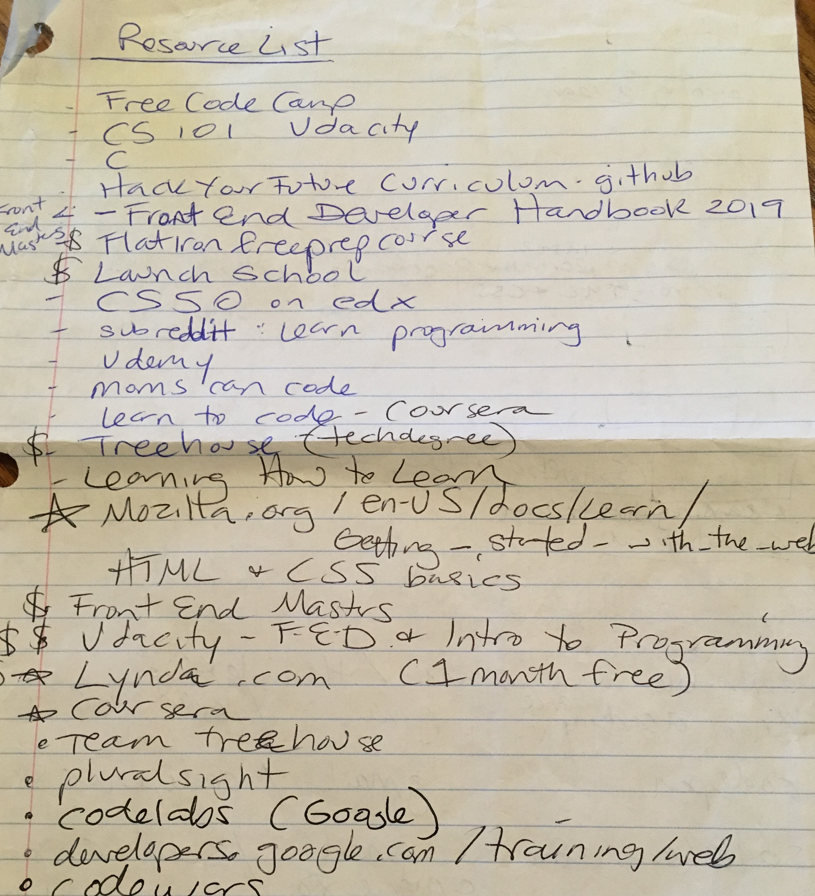
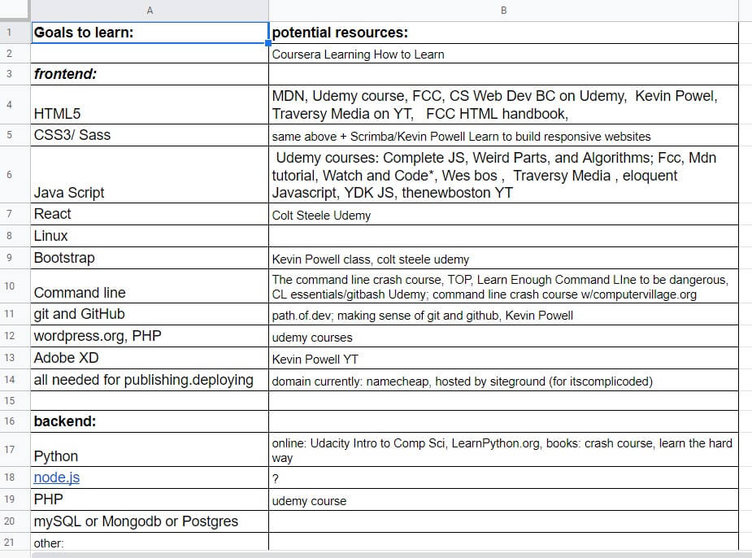

Learning: A Long Winding Road

by Dallin Holding on unsplash
October 2019
6 months of Progress.
Six months of trial and error, of finding my why and planning my path of study. Meticulously researching and choosing my resources, forging ahead, at times I’ve felt lost along the way because the resource I loved at first was now either beyond me or too simple or just didn’t fit my need. Finding my next THIS! This must the resource/class/bootcamp/whatever that will GET ME TO MY GOAL!! To then find myself stumped/frustrated/uninspired…To then rebuild, reassess and refine my path again.
The path is not linear my friends, and I’ve stumbled and stalled and been so frustrated I’ve wanted to cry. Hell I have cried! In the words of the brilliant George Harrison, “Many times I’ve been alone, and many times I’ve cried…Anyway, you’ll never know the many ways I’ve tried.”
But along the way I’ve coded! I’ve learned enough html and css and other fun stuff like Visual Studio, command line, linux, AWS, and deployment and all the lovely, fun tech-jargon that used to be way beyond my grasp or even my awareness. I still have so much more to learn...but I know enough to make this Blog! A multi-page website - I mean can it get any cooler!?
Here is my first resource list from way back in April of this year:
And here is my resource list today:
Dedication, studying everyday...
Many times I've been frustrated! Yes, to be sure, but much of the time I've felt so incredibly fulfilled. To constantly surprise yourself, to accomplish something you never imagined you could do. To feel like you're floating in an ocean of information and each bit you learn is one more piece of the boat you are building while you tread water…Nay- the yacht! The vessel to propel me to my future!
I’m exuberant talking about this because I’ve searched for and found my why. It wasn’t easy, it took time, more than I wished had passed…it took grit and persistence and exploration and trying things I didn’t end up liking at all. But I also found things I love! I found coding and I am in love and also feel like I have potential in my life that I had never before imagined…and I tell you what- it is just breathing life force into me! So anywho…you should go try the new things, try the classes, try and quit and try again and pause and consider – WHAT IS YOUR WHY?
My why is my family.
When my divorce began I was a woman who did not believe she was capable of much, let alone providing for my kids on my own. But I am, I do that, I do it everyday and I have confidence in my ability to consistently be here for them and provide for their needs. And that little taste of pride, of confidence? I really liked it, and I am wanting more. I read many web dev success articles for inspo, and I see that developers are making better lives for themselves and others and I realize, I can make a better life for my family, AND I can also help others have a better life.
I am in hot pursuit of my dreams and I tell you what, it feels pretty badass.
I highly recommend you go for yours. Chase your dream and find your why, and make a plan to pursue it! Start letting yourself explore and fall down and cry and strive and learn! If you don’t have a goal yet, start trying stuff cause its awesome and life-affirming and will beget more growth and change, and you’ll find your reasons why, your dream, your goal.
read another